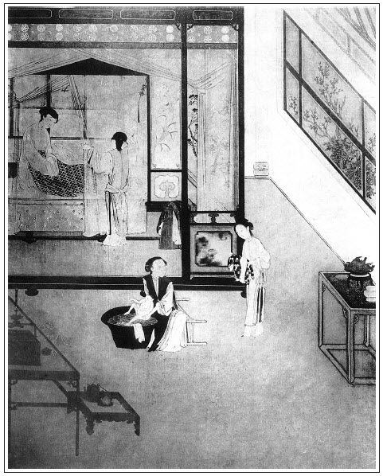

張回此回乃一部大書之眼也。看他自上文重和元年正月初一寫至此，一日一日，寫至初十，今又寫至看燈。夫看燈夜，樓上嘻笑，固金蓮、瓶兒皆在獅子街也。今必仍寫至此時此地，見報應之一絲不爽。
此回總結「財色」二字利害，故「二八佳人」一詩，放於西門洩精之時，而積財積善之言，放於西門一死之時。西門臨死囑敬濟之言，寫盡癡人，而許多帳本，總示人以財不中用，死了帶不去也。
吳神仙起先在周守備家，言周者，舟也，分明撐寶筏而相渡也。今日在土地廟中，雖有神仙，其奈地府何？蓋深示人以及時行善，悔則無及矣。
孝哥必雲西門轉世，蓋作者菩心欲渡盡世人，言雖惡如西門，至死不悟，我猶欲化其來世。又明言如西門慶等惡人，豈能望其省悟？若是省悟，除非來世也。
寫西門一死，其家中人上下一個不少，然止覺淒涼，不似瓶兒熱鬧，真是神化之筆。
此回內，即寫李三、來爵負恩賴批文事，真是「冷暖」二字中，一絲也差不得。
鴻守信義，故賢於雀，然而春鴻亦不能久留矣，觀此方知命名之妙。觀後往張二官家去，方知苗員外送童之意，為報喪帖，勾魂帖也。
寫伯爵，止用「愕然」二字，寫盡小人之心，已寫盡後文趨承張二官之意，真是一筆當千萬筆用也。
女婿斬衰泣杖，其非禮為何如！乃反襯瓶兒死，其奢僭處更難堪也。
詞曰：
人生南北如岐路，張夾大是。世事悠悠等風絮，張夾大是，大是。造化弄人無定據。張夾是，是。翻來覆去，張夾古往今來也。倒橫直豎，張夾上天下地也。眼見都如許。張夾歎盡一篇招魂賦。
到如今空嗟前事，功名富貴何須慕，坎止流行隨所寓。玉堂金馬，竹籬茅舍，總是傷心處。
──右調《青玉案》

話說西門慶，奸耍了來爵老婆，復走到卷棚內，陪吳大舅、應伯爵、謝希大、常峙節飲酒。荊統制娘子、張團練娘子、喬親家母、崔親家母、吳大妗子、段大姐，坐了好一會，上罷元宵圓子，方才起身去了。大妗子那日同吳舜臣媳婦都家去了。陳敬濟打發王皇親戲子二兩銀子唱錢，酒食管待出門。只四個唱的並小優兒，還在卷棚內彈唱遞酒。伯爵向西門慶說道：「明日花大哥生日，張夾為子虛一引。哥，你送了禮去不曾？」西門慶說道：「我早辰送過去了。」玳安道：「花大舅頭裡使來定兒送請帖兒來了。」伯爵道：「哥，你明日去不去？我好來會你。」西門慶道：「到明日看。再不，你先去罷。」少頃，四個唱的後邊去了，李銘等上來彈唱，那西門慶不住只在椅子上打睡。繡眉恙作矣。吳大舅道：「姐夫連日辛苦了，罷罷，咱每告辭罷。」於是起身。那西門慶又不肯，只顧攔著，留坐到二更時分才散。西門慶先打發四個唱的轎子去了，拿大鐘賞李銘等三人每人兩鍾酒，與了六錢唱錢，臨出門，叫回李銘分付：「我十五日要請你周爺和你荊爺、何老爹眾位，張夾虛寫，為下文反襯。你早替我叫下四個唱的，休要誤了。」李銘跪下稟問：「爹叫那四個？」西門慶道：「樊百家奴兒，秦玉芝兒，前日何老爹那裡唱的一個馮金寶兒，繡旁伏脈。張夾便出金寶。並呂賽兒，好歹叫了來。」李銘應諾：「小的知道了。」磕了頭去了。
西門慶歸後邊月娘房裡來。月娘告訴：「今日林太太與荊大人娘子好不喜歡，坐到那咱晚才去了。酒席上再三謝我說：蒙老爹扶持，但得好處，不敢有忘。在出月往淮上催攢糧運去也。」又說：「何大人娘子今日也吃了好些酒，喜歡六姐，張夾又是瓶兒，我固雲瓶兒後身也。又引到那邊花園山子上瞧了瞧。今日各項也賞了許多東西。」說畢，西門慶就在上房歇了。到半夜，月娘做了一夢，繡眉氣虛作祟，而金蓮下手，此夢大驗。天明告訴西門慶說道：「敢是我日裡看著他王太太穿著大紅絨袍兒，我黑夜就夢見你李大姐箱子內尋出一件大紅絨袍兒，與我穿在身上，被潘六姐匹手奪了去，披在他身上，教我就惱了，說道：『他的皮襖，你要的去穿了罷了，這件袍兒你又來奪。』繡旁心上事夢中亦放不過。張夾寫月娘利瓶兒之財，直至此處，猶用隱筆寫其深心。月娘真可恨哉。他使性兒把袍兒上身扯了一道大口子，吃我大吆喝，張夾貪癡如見。和他罵嚷，嚷著就醒了。不想是南柯一夢。」張夾映簪折二夢。西門慶道：「不打緊，我到明日替你尋一件穿就是了。自古夢是心頭想。」
到次日起來，頭沉，懶待往衙門中去，梳頭淨面，穿上衣裳，走來前邊書房中坐的。只見玉簫問如意兒擠了半甌子奶，逕到書房與西門慶吃藥。西門慶正倚靠床上，叫王經替他打腿。王經見玉簫來，就出去了。玉簫打發他吃了藥，西門慶就使他拿了一對金鑲頭簪兒，四個烏銀戒指兒，送到來爵媳婦子屋裡去。那玉簫明見主子使他幹此營生，又似來旺媳婦子那一本帳，繡旁照應。張夾必用玉簫，可想此處蓋為玉簫一總。夫玉簫吹噓蕙蓮，吹散金蓮，花事已盡。固應與三友同作斷腸聲也。連忙鑽頭覓縫，袖的去了。送到了物事，還走來回西門慶話，說道：「收了，改日與爹磕頭。」就拿回空甌子兒到上房去了。月娘叫小玉熬下粥，約莫等到飯時前後，還不見進來。
原來王經稍帶了他姐姐王六兒一包兒物事，遞與西門慶瞧，就請西門慶往他家去。西門慶打開紙包兒，卻是老婆剪下的一柳黑臻臻、光油油的青絲，用五色絨纏就了一個同心結托兒，用兩根錦帶兒拴著，做的十分細巧。繡眉雖明知其為送死之具，使我當之亦不得不愛。張夾不如此，不足以送死。又一件是兩個口的鴛鴦紫遍地金順袋兒，裡邊盛著瓜穰兒。西門慶觀玩良久，滿心歡喜，遂把順袋放在書廚內，錦托兒褪於袖中。正在凝思之際，忽見吳月娘驀地走來，掀開簾子，見他躺在床上，王經扒著替他打腿，便說道：「你怎的只顧在前頭，就不進去了，屋裡擺下粥了。你告我說，你心裡怎的，只是恁沒精神？」繡眉畢竟正經夫妻好。張夾將待死西門，在月娘眼中一照。西門慶道：「不知怎的，心中只是不耐煩，害腿疼。」月娘道：「想必是春氣起了。你吃了藥，也等慢慢來。」一面請到房中，打發他吃粥。因說道：「大節下，你也打起精神兒來，今日門外花大舅生日，請你往那裡走走去。再不，叫將應二哥來，同你坐坐。」西門慶道：「他也不在，與花大舅做生日去了。你整治下酒菜兒，等我往燈市鋪子內和他二舅坐坐罷。」月娘道：「你騎馬去，我教丫鬟整理。」這西門慶一面分付玳安備馬，王經跟隨，穿上衣裳，逕到獅子街燈市裡來。張夾一部炎涼書，屢次寫燈。蓋以燈之熱無多時，且盡屬虛花，以比其炎熱不久也。但見燈市中車馬轟雷，燈球燦彩，遊人如蟻，十分熱鬧。
太平時序好風催，羅綺爭馳斗錦回。
鰲山高聳青雲上，何處遊人不看來。
西門慶看了回燈，到房子門首下馬，進入裡面坐下。慌的吳二舅、賁四都來聲喏。
門首買賣，甚是興盛。來昭妻一丈青又早書房內籠下火，拿茶吃了。不一時，吳月娘使琴童兒、來安兒拿了兩方盒點心嗄飯菜蔬，鋪內有南邊帶來豆酒，打開一壇，擺在樓上，請吳二舅與賁四輪番吃酒。樓窗外就看見燈市，來往人煙不斷。
吃至飯後時分，西門慶使王經對王六兒說去。王六兒聽見西門慶來，連忙整治下春台，果盒酒餚等候。西門慶分付來昭：「將這一桌酒菜，晚夕留著吳二舅、賁四在此上宿吃，不消拿回家去了。」又教琴童提送一罈酒，過王六兒這邊來。西門慶於是騎馬徑到他家。婦人打扮迎接到明間內，插燭也似磕了四個頭。西門慶道：「迭承你厚禮，怎的兩次請你不去？」王六兒說道：「爹倒說的好，我家中再有誰來？不知怎的，這兩日只是心裡不好，茶飯兒也懶待吃，做事沒入腳處。」西門慶道：「敢是想你家老公？」婦人道：「我那裡想他！倒是見爹這一向不來，不知怎的怠慢著爹了，爹把我網巾圈兒打靠後了，只怕另有個心上人兒了。」張夾一語入賁四嫂，總是醋味，各行中皆有。西門慶笑道：「那裡有這個理！倒因家中節間擺酒，忙了兩日。」婦人道：「說昨日爹家中請堂客來。」西門慶道：「便是你大娘吃過人家兩席節酒，須得請人回席。」婦人道：「請了那幾位堂客？」西門慶便說某人某人，從頭訴說一遍。婦人道：「看燈酒兒，只請要緊的，就不請俺每請兒。」西門慶道：「不打緊，到明日十六，還有一席酒，請你每眾夥計娘子走走去。是必到跟前又推故不去了。」婦人道：「娘若賞個帖兒來，怎敢不去？繡眉此等人反要撐持門面。張夾為下文上紙受辱作引。因前日他小大姐罵了申二姐，教他好不抱怨，說俺每。他那日原要不去來，倒是俺每攛掇了他去，落後罵了來，好不在這裡哭。俺每倒沒意思剌剌的。落後又教爹娘費心，送了盒子並一兩銀子來，安撫了他，才罷了。原來小大姐這等躁暴性子，就是打狗也看主人面。」西門慶道：「你不知這小油嘴，他好不兜達的性兒，著緊把我也擦刮的眼直直的。張夾極力寫春梅。也沒見，他叫你唱，你就唱個兒與他聽罷了，誰教你不唱，又說他來？」婦人道：「耶樂，耶樂！他對我說，他幾時說他來，說小大姐走來指著臉子就罵起來，在我這裡好不三行鼻涕兩行眼淚的哭。我留他住了一夜，才打發他去了。」說了一回，丫頭拿茶吃了。老馮婆子又走來與西門慶磕頭。西門慶與了他約三四錢一塊銀子，說道：「從你娘沒了，就不往我那裡走走去。」張夾傷心語。蓋明點瓶兒夢中語，為下文黑影作映。婦人道：「沒他的主兒，那裡著落？倒常時來我這裡，和我做伴兒。」
不一時，請西門慶房中坐的，問：「爹用了午飯不曾？」西門慶道：「我早辰家中吃了些粥，剛才陪你二舅又吃了兩個點心，且不吃甚麼哩。」一面放桌兒，安排上酒來。婦人令王經打開豆酒，篩將上來，陪西門慶做一處飲酒。婦人問道：「我稍來的那物件兒，爹看見來？都是奴旋剪下頂中一溜頭髮，親手做的。管情爹見了愛。」西門慶道：「多謝你厚情。」飲至半酣，見房內無人，西門慶袖中取出來，繡眉一白綾帶已見深心慧巧矣，而又有頭髮相易者，愈出愈奇。愛慾一場，何所不至。套在龜身下，兩根錦帶兒紮在腰間，用酒服下胡僧藥去，張夾點明梵僧。那婦人用手搏弄，弄得那話登時奢稜跳腦，橫筋皆現，色若紫肝，張夾數句與始服藥時一照。比銀托子和白綾帶子又不同。西門慶摟婦人坐在懷內，那話插進牝中，在上面兩個一遞一口飲酒，咂舌頭頑笑。張夾與初會時一對。吃至掌燈，馮媽媽又做了些韭菜豬肉餅兒拿上來。婦人陪西門慶每人吃了兩個，丫鬟收下去。兩個就在裡間暖炕上，撩開錦幔，解衣就寢。婦人知道西門慶好點著燈行房，把燈台移在裡間炕邊桌上，一面將紙門關上，澡牝乾淨，脫了褲兒，鑽在被窩裡，與西門慶做一處相摟相抱，睡了一回。繡眉肆犯貪癡，便是殺身之兆。原來西門慶心中只想著何千戶娘子藍氏，欲情如火，張夾寫盡貪癡。那話十分堅硬。先令婦人馬伏在下，那話放入庭花內，極力扇蹦了約二三百度，扇蹦的屁股連聲響亮，婦人用手在下揉著𣭈心子，張夾自用手揉，妙情可想。口中叫達達如流水。西門慶還不美意，又起來披上白綾小襖，坐在一隻枕頭上，令婦人仰臥，尋出兩條腳帶，把婦人兩隻腳拴在兩邊護炕柱兒上，賣了個金龍探爪，將那話放入牝中，少時，沒稜露腦，淺抽深送。恐婦人害冷，亦取紅綾短襦，蓋在他身上。這西門慶乘其酒興，把燈光挪近跟前，垂首玩其出入之勢。抽徹至首，復送至根，又數百回。婦人口中百般柔聲顫語，都叫將出來。繡眉是作家用度。西門慶又取粉紅膏子藥，塗在龜頭上攮進去，婦人陰中麻癢不能當，張旁與金蓮品玉文字又一對，總是兩六兒一般技量，方可死西門也。急令深入，兩廂迎就。這西門慶故作逗留，戲將龜頭濡晃其牝口，又挑弄其花心，不肯深入，急的婦人淫津流出，如蝸之吐涎。張旁又與葡萄架作對。燈光裡，見他兩隻腿兒著紅鞋，蹺在兩邊，吊的高高的，張旁又與葡萄架遙對。一往一來，一衝一撞，張旁腿也。其興不可遏。因口呼道：「淫婦，你想我不想？」婦人道：「我怎麼不想達達，只要你松柏兒冬夏長青便好。張夾映賁四嫂，卻是後文。休要日遠日疏，頑耍厭了，把奴來不理。奴就想死罷了，敢和誰說？有誰知道？就是俺那王八來家，我也不和他說。想他恁在外做買賣，有錢，他不會養老婆的？他肯掛念我？」西門慶道：「我的兒，你若一心在我身上，等他來家，我爽利替他另娶一個，你只長遠等著我便了。」婦人道：「好達達，等他來家，好歹替他娶了一個罷，或把我放在外頭，或是招我到家去，隨你心裡。淫婦爽利把不直錢的身子，拼與達達罷，無有個不依你的。」繡眉六兒之言不知果真心否？而以其所不喜易其所愛，是人情之常。張夾故作滿語，以襯喪命也。西門慶道：「我知道。」兩個說話之間，又干勾兩頓飯時，方才精洩。解卸下婦人腳帶來，摟在被窩內，並頭交股，醉眼朦朧，一覺直睡到三更時分方起。西門慶起來，穿衣淨手。婦人開了房門，叫丫鬟進來，再添美饌，復飲香醪，滿斟暖酒，又陪西門慶吃了十數杯。不覺醉上來，才點茶漱口，向袖中掏出一紙帖兒遞與婦人：「問甘夥計鋪子裡取一套衣服你穿，隨你要甚花樣。」那婦人萬福謝了，方送出門。
王經打著燈籠，玳安、琴童籠著馬，那時也有三更天氣，陰雲密佈，月色朦朧，街市上人煙寂寞，閭巷內犬吠盈盈。打馬剛走到西首那石橋兒跟前，忽然一陣旋風，只見個黑影子，從橋底下鑽出來，向西門慶一撲。繡眉子虛來矣。那馬見了只一驚跳，西門慶在馬上打了個冷戰，張夾寫得冷氣浸人，子虛武大皆來矣。醉中把馬加了一鞭，那馬搖了搖鬃，玳安、琴童兩個用力拉著嚼環，收煞不住，雲飛般望家奔將來，直跑到家門首方止。王經打著燈籠，後邊跟不上。西門慶下馬腿軟了，被左右扶進，逕往前邊潘金蓮房中來。繡眉何異驅牲屠肆。此這一來，正是：
失脫人家逢五道，濱冷餓鬼撞鐘馗。
原來金蓮從後邊來，還沒睡，渾衣倒在炕上，等待西門慶。聽見來了，連忙一骨碌扒起來，張夾所為鍾馗番身也。向前替他接衣服。見他吃的酩酊大醉，也不敢問他。西門慶一隻手搭伏著他肩膀上，摟在懷裡，口中喃喃吶吶說道：「小淫婦兒，你達達今日醉了，收拾鋪，我睡也。」那婦人扶他上炕，打發他歇下。那西門慶丟倒頭在枕上鼾睡如雷，再搖也搖他不醒。然後婦人脫了衣裳，鑽在被窩內，慢慢用手腰裡摸他那話，猶如綿軟，再沒硬朗氣兒，更不知在誰家來。翻來覆去，怎禁那慾火燒身，淫心蕩漾，不住用手只顧捏弄，蹲下身子，被窩內替他百計品咂，只是不起，急的婦人要不的。張夾要不得。
因問西門慶：「和尚藥在那裡放著哩？」推了半日推醒了。西門慶酩子裡罵道：「怪小淫婦，只顧問怎的？你又教達達擺佈你，你達今日懶待動彈。藥在我袖中穿心盒兒內。你拿來吃了，有本事品弄的他起來，是你造化。」那婦人便去袖內摸出穿心盒來打開，裡面只剩下三四丸藥兒。這婦人取過燒酒壺來，斟了一鍾酒，自己吃了一丸，還剩下三丸。恐怕力不效，千不合，萬不合，拿燒酒都送到西門慶口內。繡眉此藥較武大藥所差幾何？吃法與武大吃法所差幾何？因果迴圈，讀者猛省。醉了的人，曉的甚麼？合著眼只顧吃下去。張夾與武大吃藥時一般也。那消一盞熱茶時，藥力發作起來，婦人將白綾帶子拴在根上，張夾所以做白綾帶，為此處喪命用也。那話躍然而起，婦人見他只顧去睡，於是騎在他身上，又取膏子藥安放在馬眼內，頂入牝中，只顧揉搓，那話直抵苞花窩裡，覺翕翕然，渾身酥麻，暢美不可言。繡眉所謂只要洋卵子，不顧羊性命，殆以此歟？又兩手據按，舉股一起一坐，那話坐稜露腦，一二百回。初時澀滯，次後淫水浸出，稍沾滑落，西門慶由著他掇弄，只是不理。張旁又寫西門。婦人情不能當，以舌親於西門慶口中，兩手摟著他脖項，極力揉搓，左右偎擦，張旁八字寫盡所為，翻來覆去，橫衝直豎也。麈柄盡沒至根，止剩二卵在外，用手摸之，美不可言，淫水隨拭隨出。比三鼓天，五換巾帕。婦人一連丟了兩次，西門慶只是不洩。龜頭越發脹的猶如炭火一般，害箍脹的慌，令婦人把根下帶子去了，還發脹不已，張夾然則婦人固造化也。令婦人用口吮之。這婦人扒伏在他身上，用朱唇吞裹龜頭，只顧往來不已，又勒勾約一頓飯時，張旁婦人又造化也。那管中之精猛然一股冒將出來，猶水銀之瀉筒中相似，忙用口接咽不及，只顧流將出來。初時還是精液，往後儘是血水出來，再無個收救。繡眉看此光景，與宰殺諸物何異。西門慶已昏迷去，四肢不收。婦人也慌了，急取紅棗與他吃下去。精盡繼之以血，血盡出其冷氣而已。繡旁可憐。繡眉此菩提捧喝，須省，須省。張夾比武大何如？看其翡翠軒葡萄架諸樣，亦須看此等樣子。良久方止。婦人慌做一團，便摟著西門慶問道：「我的哥哥，你心裡覺怎麼的！」西門慶亦甦醒了一回，方言：「我頭目森森然，莫知所以。」金蓮問：「你今日怎的流出恁許多來？」更不說他用的藥多了。看官聽說，一己精神有限，天下色慾無窮。張夾二句道盡。又曰「嗜欲深者，其生機淺」，張夾又二句道盡。西門慶只知貪淫樂色，更不知油枯燈滅，髓竭人亡。正是起頭所說：
二八佳人體似酥，腰間仗劍斬愚夫。
雖然不見人頭落，暗裡教君骨髓枯。繡眉以起詩作結，作者大意所在。張眉一個「色」字方結完。與「舞裙歌扇」一絕，同一千里大章法。
一宿晚景題過。到次日清早辰，西門慶起來梳頭，忽然一陣昏暈，望前一頭搶將去。早被春梅雙手扶住，不曾跌著磕傷了頭臉。在椅上坐了半日，方才回過來。張夾好色才看樣。慌的金蓮連忙問道：「只怕你空心虛弱，且坐著，吃些甚麼兒著，出去也不遲。」一面使秋菊：「後邊取粥來與你爹吃。」那秋菊走到後邊廚下，問雪娥：「熬的粥怎麼了？爹如此這般，今早起來害了頭暈，跌了一交，如今要吃粥哩。」不想被月娘聽見，叫了秋菊，問其端的。秋菊悉把西門慶梳頭，頭暈跌倒之事，告訴一遍。月娘不聽便了，聽了魂飛天外，魄散九霄，一面分付雪娥快熬粥，一面走來金蓮房中看視。繡眉畢竟正經夫妻。見西門慶坐在椅子上，問道：「你今日怎的頭暈？」西門慶道：「我不知怎的，剛才就頭暈起來。」金蓮道：「早時我和春梅在跟前扶住了，繡旁還虧你。不然好輕身子兒，這一交和你善哩！」張夾不是卿與春梅或者無此一交，殺人埋之，曰：「非我，誰其埋之也！」一笑。月娘道：「敢是你昨日來家晚了，酒多了頭沉。」金蓮道：「昨日往誰家吃酒？那咱晚才來。」張夾心虛語。月娘道：「他昨日和他二舅在鋪子裡吃酒來。」
不一時，雪娥熬了粥，教春梅拿著，打發西門慶吃。那西門慶拿起粥來，只吃了半甌兒，懶待吃，就放下了。月娘道：「你心裡覺怎的？」西門慶道：「我不怎麼，只是身子虛飄飄的，懶待動旦。」繡旁自然。月娘道：「你今日不往衙門中去罷。」西門慶道：「我不去了。消一回，我往前邊看著姐夫寫帖兒，十五日請周菊軒、荊南崗、何大人眾官客吃酒。」張夾寫不知死人如畫。月娘道：「你今日還沒吃藥，取奶來把那藥再吃上一服。是你連日著辛苦忙碌了。」一面教春梅問如意兒擠了奶來，張夾前鏡台春色，湧泉之精，只消受得此一口奶，癡人須想。用盞兒盛著，教西門慶吃了藥，起身往前邊去。張夾癡人如畫。春梅扶著，剛走到花園角門首，覺眼便黑了，身子晃晃蕩蕩，做不的主兒，只要倒。春梅又扶回來了。月娘道：「依我且歇兩日兒，請人也罷了，那裡在乎這一時。且在屋裡將息兩日兒，不出去罷。」因說：「你心裡要吃甚麼，我往後邊做來與你吃。」西門慶道：「我心裡不想吃。」
月娘到後邊，從新又審問金蓮：「他昨日來家醉不醉？再沒曾吃酒？與你行甚麼事？」金蓮聽了，恨不的生出幾個口來，說一千個沒有：張夾此所為殺人不見血，李知縣固云「屍、傷、病、物、蹤」五件全無者也。「姐姐，你沒的說，他那咱晚來了，醉的行禮兒也沒顧的，還問我要燒酒吃，張夾妙，是虛心漏空語。教我拿茶當酒與他吃，張夾或者將酒當茶，將色當飯。只說沒了酒，好好打發他睡了。自從姐姐那等說了，誰和他有甚事來，倒沒的羞人子剌剌的。倒只怕別處外邊有了事來，俺每不知道。若說家裡，可是沒絲毫事兒。」繡旁然乎？否乎？張夾活是金蓮，比對武二說大郎病症何如？月娘和玉樓都坐在一處，一面叫了玳安、琴童兩個到跟前審問他：「你爹昨日在那裡吃酒來？你實說便罷，不然有一差二錯，就在你這兩個囚根子身上。」那玳安咬定牙，只說獅子街和二舅、賁四吃酒，再沒往那裡去。繡眉又是一個金蓮，妙。張夾妙，活是玳安，比何九，鄆哥何如？落後叫將吳二舅來，問他，二舅道：「姐夫只陪俺每吃了沒多大回酒，就起身往別處去了。」這吳月娘聽了，心中大怒，待二舅去了，把玳安、琴童盡力數罵了一遍，要打他二人。二人慌了，方才說出：「昨日在韓道國老婆家吃酒來。」那潘金蓮得不的一聲就來了，張夾總用飛舞之筆寫一金蓮。蓋寫殺人之金蓮，不得不飛舞矣。說道：「姐姐剛才就埋怨起俺每來，正是冤殺旁人笑殺賊。俺每人人有面，樹樹有皮，姐姐那等說來，莫不俺每成日把這件事放在頭裡？」繡旁豈不也者。張夾又活是金蓮。不特妾婦如此，天下如此說昧心語者豈少也哉？欺父欺君，當同此類也，可恨可恨！又道：「姐姐，你再問這兩個囚根子，前日你往何千戶家吃酒，他爹也是那咱時分才來，不知在誰家來。誰家一個拜年，拜到那咱晚！」玳安又恐怕琴童說出來，隱瞞不住，遂把私通林太太之事，備說一遍。月娘方才信了，說道：「嗔道教我拿帖兒請他，我還說人生面不熟，他不肯來，怎知和他有連手。我說恁大年紀，描眉畫鬢，搽的那臉倒像膩抹兒抹的一般，乾淨是個老浪貨！」玉樓道：「姐姐，沒見一個兒子也長恁大人兒，娘母還幹這個營生。忍不住，嫁了個漢子，也休要出這個丑。」金蓮道：「那老淫婦有甚麼廉恥！」張夾金蓮一味推人，遂忘忌諱。月娘道：「我只說他決不來，誰想他浪𢵞著來了。」金蓮道：「這個，姐姐才顯出個皂白來了！張夾純是飛舞之筆。寫得金蓮活跳，方是活金蓮，方可殺人。像韓道國家這個淫婦，姐姐還嗔我罵他！乾淨一家子都養漢，是個明王八，把個王八羔子也裁派將來，早晚好做勾使鬼。」月娘道：「王三官兒娘，你還罵他老淫婦，他說你從小兒在他家使喚來。」繡旁妙。張夾點明寫林氏之故，又見月娘不快金蓮，處處有成心處。那金蓮不聽便罷，聽了把臉掣耳朵帶脖子都紅了，繡旁妙。繡眉尚有良心。張夾用筆刻甚。便罵道：「汗邪了那賊老淫婦！我平日在他家做甚麼？張夾口強辭窮，為後文識破姦情一引。還是我姨娘在他家緊隔壁住，他家有個花園，俺每小時在俺姨娘家住，常過去和他家伴姑兒耍子，就說我在他家來，我認的他是誰？也是個張眼露睛的老淫婦！」月娘道：「你看那嘴頭子！人和你說話，你罵他。」張夾是撒潑後語。那金蓮一聲兒就不言語了。張夾一路寫金蓮，純是與月娘對頭不著，聲色俱出。
月娘主張叫雪娥做了些水角兒，拿了前邊與西門慶吃。正走到儀門首，只見平安兒徑直往花園中走。被月娘叫住問道：「你做甚麼？」平安兒道：「李銘叫了四個唱的，十五日擺酒，因來回話。問擺的成擺不成。我說未發帖兒哩。他不信，教我進來稟爹。」月娘罵道：「怪賊奴才，還擺甚麼酒，問甚麼，還不回那王八去哩，還來稟爹娘哩。」把平安兒罵的往外金命水命去了。月娘走到金蓮房中，看著西門慶只吃了三四個水角兒，就不吃了。因說道：「李銘來回唱的，教我回倒他，改日子了，他去了。」西門慶點頭兒。
西門慶只望一兩日好些出來，誰知過了一夜，到次日，內邊虛陽腫脹，不便處發出紅瘰來，連腎囊都腫得明滴溜如茄子大。但溺尿，尿管中猶如刀子犁的一般。溺一遭，疼一遭。張夾比奢稜露腦何如？比一洩如注又何如？外邊排軍、伴當備下馬伺候，還等西門慶往衙門裡大發放，不想又添出這樣症候來。月娘道：「你依我拿帖兒回了何大人，在家調理兩日兒，不去罷。你身子恁虛弱，趁早使小廝請了任醫官，教瞧瞧。你吃他兩貼藥過來。休要只顧耽著，不是事。你偌大的身量，兩日通沒大好吃甚麼兒，如何禁的？」那西門慶只是不肯吐口兒請太醫，只說：「我不妨事，過兩日好了，我還出去。」雖故差人拿帖兒送假牌往衙門裡去，在床上睡著，只是急躁，沒好氣。
應伯爵打聽得知，走來看他。西門慶請至金蓮房中坐的。伯爵聲喏道：「前日打攪哥，不知哥心中不好，嗔道花大舅那裡不去。」西門慶道：「我心中若好時，也去了。不知怎的懶待動旦。」伯爵道：「哥，你如今心內怎樣的？」西門慶道：「不怎的，只是有些頭暈，起來身子軟，走不的。」伯爵道：「我見你面容發紅色，只怕是火。教人看來不曾？」西門慶道：「房下說請任後溪來看我，我說又沒甚大病，怎好請他的。」伯爵道：「哥，你這個就差了，還請他來看看，怎的說。吃兩貼藥，散開這火就好了。春氣起，人都是這等痰火舉發舉發。昨日李銘撞見我，張夾淡上接來。說你使他叫唱的，今日請人擺酒，說你心中不好，改了日子。把我諕了一跳，張夾西門一息尚存，伯爵猶一絲不走，滿身滿口奉承也。我今日才來看哥。」西門慶道：「我今日連衙門中拜牌也沒去，送假牌去了。」伯爵道：「可知去不的，大調理兩日兒出門。」吃畢茶道：「我去罷，再來看哥。李桂姐會了吳銀兒，也要來看你哩。」西門慶道：「你吃了飯去。」伯爵道：「我一些不吃。」揚長出去了。
西門慶於是使琴童往門外請了任醫官來，進房中診了脈，說道：「老先生此貴恙，乃虛火上炎，腎水下竭，不能既濟，此乃是脫陽之症。須是補其陰虛，方才好得。」繡眉任醫的真明理，不比世間一味猜謎下藥便死者。張夾此句出任醫之口，尚是人醫，不是獸醫也。說畢，作辭起身去了。一面封了五錢銀子，討將藥來，吃了。止住了頭暈，繡旁應效。張夾上火可清，下水難生也。身子依舊還軟，起不來。下邊腎囊越發腫痛，溺尿甚難。張夾比一洩如注何如？
到後晌時分，李桂姐、吳銀兒坐轎子來看。每人兩個盒子，進房與西門慶磕頭，說道：「爹怎的心裡不自在？」西門慶道：「你姐兒兩個自恁來看看便了，如何又費心買禮兒。」因說道：「我今年不知怎的，痰火發的重些。」桂姐道：「還是爹這節間酒吃的多了，清潔他兩日兒，就好了。」坐了一回，走到李瓶兒那邊屋裡，與月娘眾人見節。請到後邊，擺茶畢，又走來到前邊，陪西門慶坐的說話兒。只見伯爵又陪了謝希大、常峙節來望。西門慶教玉簫搊扶他起來坐的，留他三人在房內，放桌兒吃酒。謝希大道：「哥，用了些粥不曾？」玉簫把頭扭著不答應。張夾為玉簫一結。蓋至此玉簫聲咽，即陽關調，亦不能成聲也。西門慶道：「我還沒吃粥，嚥不下去。」希大道：「拿粥，等俺每陪哥吃些粥兒還好。」不一時，拿將粥來。西門慶拿起粥來，只扒了半盞兒，就吃不下了。月娘和李桂姐、吳銀兒都在李瓶兒那邊坐的。伯爵問道：「李桂姐與銀姐來了，怎的不見？」西門慶道：「在那邊坐的。」伯爵因令來安兒：「你請過來，唱一套兒與你爹聽。」張夾此時眾人，俱不以西門死為意也。吳月娘恐西門慶不耐煩，攔著，只說吃酒哩，不教過來。眾人吃了一回酒，說道：「哥，你陪著俺每坐，只怕勞碌著你。俺每去了，你自在側側兒罷。」西門慶道：「起動列位掛心。」三人於是作辭去了。
應伯爵走出小院門，叫玳安過來分付：「你對你大娘說，應二爹說來，你爹面上變色，有些滯氣，不好，早尋人看他。大街上胡太醫最治的好痰火，繡眉「痰火」二字，從何說起？自古諱疾忌醫如西門慶者，死不足怪，獨怪有自知其疾而庸醫偏執，以至無救者，可勝痛恨。何不使人請他看看，休要耽遲了。」玳安不敢怠慢，走來告訴月娘。月娘慌進房來，對西門慶說：「方纔應二哥對小廝說，大街上胡太醫看的痰火好，你何不請他來看看你？」西門慶道：「胡太醫前番看李大姐不濟，又請他？」張夾一筆，使瓶兒與西門死一總。月娘道：「藥醫不死病，佛度有緣人。看他不濟，只怕你有緣，吃了他的藥兒好了是的。」繡旁「有緣」二字可憐，殺人不少。西門慶道：「也罷，你請他去。」不一時，使棋童兒請了胡太醫來。適有吳大舅來看，陪他到房中看了脈。對吳大舅、陳敬濟說：「老爹是個下部蘊毒，若久而不治，卒成溺血之疾。張夾所以雲胡說也。乃是忍便行房。」又封了五星藥金，討將藥來吃下去，如石沉大海一般，反溺不出來。張夾乃武大討利錢者。月娘慌了，打發桂姐、吳銀兒去了，又請何老人兒子何春泉來看。又說：「是癃閉便毒，一團膀胱邪火，趕到這下邊來。四肢經絡中，又有濕痰流聚，以致心腎不交。」繡眉此子不善讀父書，可笑，可歎！封了五錢藥金，討將藥來，越發弄的虛陽舉發，麈柄如鐵，晝夜不倒。張夾比梵僧藥何如？潘金蓮晚夕不管好歹，還騎在他身上，倒澆蠟燭掇弄，死而復甦者數次。繡旁可憐。張夾叨荷春泉之惠多多矣。
到次日，何千戶要來望，先使人來說。月娘便對西門慶道：「何大人要來看你，我扶你往後邊去罷，繡旁金蓮卻少許多蠟燭矣。這邊隔二騙三，張夾將一部《金瓶梅》三人居住花園，只用此四字一點，不堪之甚。不是個待人的。」那西門慶點頭兒。於是月娘替他穿上暖衣，和金蓮肩搭搊扶著，方離了金蓮房，往後邊上房，鋪下被褥高枕，安頓他在明間炕上坐的。房中收拾乾淨，焚下香。不一時，何千戶來到，陳敬濟請他到於後邊臥房，看見西門慶坐在病榻上，說道：「長官，我不敢作揖。」因問：「貴恙覺好些？」西門慶告訴：「上邊火倒退下了，只是下邊腫毒，當不的。」何千戶道：「此系便毒。我學生有一相識，在東昌府探親，昨日新到舍下，乃是山西汾州人氏，姓劉號橘齋，年半百，極看的好瘡毒。我就使人請他來看看長官貴恙。」西門慶道：「多承長官費心，我這裡就差人請去。」何千戶吃畢茶，說道：「長官，你耐煩保重。衙門中事，我每日委答應的遞事件與你，不消掛意。」西門慶舉手道：「只是有勞長官了。」作辭出門。西門慶這裡隨即差玳安拿帖兒，同何家人請了這劉橘齋來。看了脈，並不便處，連忙上了藥，又封一貼煎藥來。西門慶答賀了一疋杭州絹，一兩銀子。吃了他頭一盞藥，還不見動靜。
那日不想鄭月兒送了一盒鴿子雛兒，張夾猶是興陽妙藥，妙絕，妙絕。一盒果餅頂皮酥，坐轎子來看。進門與西門慶磕頭，說道：「不知道爹不好，桂姐和銀姐好人兒，不對我說聲兒，兩個就先來了。看的爹遲了，休怪。」西門慶道：「不遲，又起動你費心，又買禮來。」愛月兒笑道：「甚麼大禮，惶恐。」因說：「爹清減的恁樣的，每日飲饌也用些兒？」月娘道：「用的倒好了，吃不多兒。今日早辰，只吃了些粥湯兒，剛才太醫看了去了。」愛月兒道：「娘，你分付姐把鴿子雛兒頓爛一個兒來，等我勸爹進些粥兒。你老人家不吃，恁偌大身量，一家子金山也似靠著你，卻怎麼樣兒的。」月娘道：「他只害心口內攔著，吃不下去。」愛月兒道：「爹，你依我說，把這飲饌兒就懶待吃，須也強吃些兒，怕怎的？人無根本，水食為命。終須用些兒。不然，越發淘淥的身子空虛了。」不一時，頓爛了鴿子雛兒，小玉拿粥上來，十香甜醬瓜茄，粳粟米粥兒。這鄭月兒跳上炕去，用盞兒托著，跪在西門慶身邊，一口口餵他。強打著精神，只吃了上半盞兒。揀兩箸兒鴿子雛兒在口內，就搖頭兒不吃了。愛月兒道：「一來也是藥，繡旁未必。二來還虧我勸爹，卻怎的也進了些飲饌兒！」玉簫道：「爹每常也吃，不似今日月姐來，勸著吃的多些。」月娘一面擺茶與愛月兒吃，臨晚管待酒饌，與了他五錢銀子，打發他家去。愛月兒臨出門，又與西門慶磕頭，說道：「爹，你耐煩將息兩日兒，我再來看你。」張夾寫月兒與眾人不同，是新得寵者。
比及到晚夕，西門慶又吃了劉橘齋第二貼藥，遍身疼痛，叫了一夜。到五更時分，那不便處腎囊脹破了，流了一灘鮮血，龜頭上又生出疳瘡來，流黃水不止。繡眉世有要好而反害之者，不獨何千戶之薦也。張夾或者有粉紅膏在內。西門慶不覺昏迷過去。月娘眾人慌了，都守著看視，見吃藥不效，一面請了劉婆子，在前邊卷棚內與西門慶點人燈跳神，張夾映月娘。一面又使小廝往周守備家內訪問吳神仙在那裡，請他來看，因他原相西門慶今年有嘔血流膿之災，骨瘦形衰之病。賁四說：「也不消問周老爹宅內去，如今吳神仙見在門外土地廟前，張夾起以玉皇廟，歸宿於土地廟，為「熱」字結煞。出著個卦肆兒，又行醫，又賣卦。人請他，不爭利物，就去看治。」月娘連忙就使琴童把這吳神仙請將來。進房看了西門慶不似往時，形容消減，病體懨懨，勒著手帕，在於臥榻。先診了脈息，說道：「官人乃是酒色過度，腎水竭虛，太極邪火聚於慾海，病在膏肓，難以治療。張夾一部結文以此。吾有詩八句，說與你聽──只因他：
醉飽行房戀女娥，精神血脈暗消磨。
遺精溺血與白濁，燈盡油干腎水枯。
當時只恨歡娛少，今日翻為疾病多。
玉山自倒非人力，總是盧醫怎奈何！
月娘見他說治不的了，道：「既下藥不好，先生看他命運如何？」吳神仙掐指尋紋，打算西門慶八字，說道：「屬虎的，丙寅年，戊申月，壬午日，丙辰時。今年戊戌，流年三十三年，算命，見行癸亥運。雖然是火土傷宮，今年戊土來克壬水。正月又是戊寅月，三戊沖辰，怎麼當的？雖發財發福，難保壽源。張夾二句妙絕。壽源難保，財福何用？有四句斷語不好。說道：
命犯災星必主低，身輕煞重有災危。
時日若逢真太歲，就是神仙也皺眉。
月娘道：「命不好，請問先生還有解麼？」神仙道：「白虎當頭，喪門坐命，神仙也無解，太歲也難推。造物已定，神鬼莫移。」月娘只得拿了一疋布，謝了神仙，打發出門。月娘見求神問卜皆有凶無吉，心中慌了。到晚夕，天井內焚香，對天發願，許下「兒夫好了，要往泰安州頂上與娘娘進香掛袍三年」。孟玉樓又許下逢七拜斗，繡眉病豈此等可療？然亦自盡其心耳。獨金蓮與李嬌兒不許願心。繡旁此是何故？可恨，可恨。張夾一筆將一部金蓮貶到與妓者一樣。
西門慶自覺身體沉重，要便發昏過去，眼前看見花子虛、武大在他跟前站立，問他討債，張夾是臨死光景，奸雄回首，同聲一哭。又不肯告人說，只教人廝守著他。見月娘不在跟前，一手拉著潘金蓮，張夾必待月娘不在，亦明知月娘不相容也。心中捨他不的，滿眼落淚，說道：「我的冤家，我死後，你姐妹們好好守著我的靈，休要失散了。」繡旁至死不悟，而猶作此態，真正犬豕。張夾與分香買履一樣癡景。那金蓮亦悲不自勝，說道：「我的哥哥，只怕人不肯容我。」張夾是「撒潑」後心事。西門慶道：「等他來，等我和他說。」不一時，吳月娘進來，見他二人哭的眼紅紅的，便道：「我的哥哥，你有甚話，對奴說幾句兒，也是我和你做夫妻一場。」繡旁可憐。張夾是不能容金蓮情景，言下已深恨矣。西門慶聽了，不覺哽咽哭不出聲來，張夾又照瓶兒死時囑人光景，曾幾何時，受囑者亦囑人矣。說道：「我覺自家好生不濟，有兩句遺言和你說：我死後，你若生下一男半女，你姊妹好好待著，一處居住，休要失散了，惹人家笑話。」張夾千古癡人，同聲一哭。指著金蓮說：「六兒從前的事，你耽待他罷。」張夾可知「撒潑」一事，作者曲曲寫出，蓋為後死金蓮之媒也。說畢，那月娘不覺桃花臉上滾下珍珠來，放聲大哭，悲慟不止。張夾絕無一言，其恨可知。蓋愈囑而月娘愈醋矣。西門慶囑付了吳月娘，又把陳敬濟叫到跟前，說道：「姐夫，我養兒靠兒，無兒靠婿。張夾反刺後文，寫盡生死苦極。姐夫就是我的親兒一般。繡眉世人有認定一人為可以托孤寄命，及至屍骨未冷，而患害反由之而作，比比皆然，可勝歎哉。張夾奸雄回首，茫然自失如此。我若有些山高水低，你發送了我入土。張夾囑敬濟如此。好歹一家一計，幫扶著你娘兒每過日子，休要教人笑話。」張夾囑敬濟又如此。又分付：「我死後，段子鋪裡五萬銀子本錢，有你喬親家爹那邊，多少本利都找與他。教傅夥計把貨賣一宗交一宗，休要開了。張夾結段子鋪五萬兩。賁四絨線鋪，本銀六千五百兩，張夾結絨線鋪六千五百兩。吳二舅綢絨鋪是五千兩，張夾結綢絨鋪五千兩。都賣盡了貨物，收了來家。又李三討了批來，也不消做了，教你應二叔拿了別人家做去罷。李三、黃四身上還欠五百兩本錢，一百五十兩利錢未算，張夾連利六百五十兩。討來發送我。你只和傅夥計守著家門這兩個鋪子罷。印子鋪佔用銀二萬兩，張夾結印子鋪二萬兩。生藥鋪五千兩，張夾結生藥鋪五千兩。韓夥計、來保松江船上四千兩。張夾四千兩。開了河，你早起身，往下邊接船去。接了來家，賣了銀子交進來，你娘兒每盤纏。張夾已算定道國之拐，此處見西門老奸，與敬濟不經事者不同。前邊劉學官還少我二百兩，張夾二百兩。華主簿少我五十兩，張夾五十兩。門外徐四鋪內，還欠我本利三百四十兩，張夾三百四十兩。以上共計八萬七千七百四十兩。然則西門氏之富亦不過十萬餘耳，遂造如此之孽，吁，可畏哉！都有合同見在，上緊使人催去。到日後，對門並獅子街兩處房子都賣了罷，只怕你娘兒們顧攬不過來。」張夾豈知顧攬不過娘兒們來，可歎可笑。說畢，哽哽咽咽的哭了。繡眉臨死井井，此人根器尚好，故再世有永福之度。張夾奸雄末路，同此一付眼淚。陳敬濟道：「爹囑咐，兒子都知道了。」不一時，傅夥計、甘夥計、吳二舅、賁四、崔本都進來看視問安。西門慶一一都分付了一遍。眾人都道：「你老人家寬心，不妨事。」一日來問安看者，也有許多。張夾猶是場中餘熱。見西門慶不好的沉重，皆嗟歎而去。
過了兩日，月娘癡心，只指望西門慶還好，誰知天數造定，三十三歲而去。張夾老陽之數，剝削已盡。一化孝哥，幸而碩果猶存，亦見天命民懿不以惡人而滅絕也。誰謂作稗官者不知易也哉？到於正月二十一日，張夾二十一又是陽數，合三十三又見陽明興，而陰晦除，君子進，而小人死矣。五更時分，相火燒身，變出風來，聲若牛吼一般，喘息了半夜。挨到巳牌時分，嗚呼哀哉，斷氣身亡。
正是：
三寸氣在千般用，一旦無常萬事休。繡旁照出。
古人有幾句格言，說得好：
為人多積善，不可多積財。
積善成好人，積財惹禍胎。
石崇當日富，難免殺身災。
鄧通飢餓死，錢山何用哉！
今人非古比，心地不明白。
只說積財好，反笑積善呆。
多少有錢者，臨了沒棺材。張夾此數語，與「醉飽行房」一律相對。彼是結色，此是結財。章法井井，與開講一詩四成語相對。而「二八佳人」一絕，又自與「舞裙歌扇」一絕前後板排，又是一般章法，共成參差錯伍之致。
原來西門慶一倒頭，棺材尚未曾預備。張夾一句點醒多少愚人。慌的吳月娘叫了吳二舅與賁四到跟前，開了箱子拿出四錠元寶，教他兩個看材板去。剛才打發去了，不防忽一陣就害肚裡疼，急撲進去床上倒下，就昏暈不省人事。孟玉樓與潘金蓮、孫雪娥都在那邊屋裡，七手八腳，替西門慶戴唐巾，裝柳穿衣服。忽聽見小玉來說：「俺娘跌倒在床上。」慌的玉樓、李嬌兒就來問視，月娘手按著害肚內疼，就知道決撒了。玉樓教李嬌兒守著月娘，他就來使小廝快請蔡老娘去。張夾玉樓實終始諸人。李嬌兒又使玉簫前邊教如意兒來。比及玉樓回到上房裡面，不見了李嬌兒。原來李嬌兒趕月娘昏沉，房內無人，箱子開著，暗暗拿了五錠元寶，往他屋裡去了。手中拿將一搭紙，見了玉樓，只說：「尋不見草紙，我往房裡尋草紙去來。」那玉樓也不留心，且守著月娘，拿榪子伺候，見月娘看看疼的緊了。
不一時，蔡老娘到了，登時生下一個孩兒來。這屋裡裝柳西門慶停當，口內才沒氣兒，張夾一句緊接，所以必孝哥為西門化身，所以分明官哥為子虛化身也。閤家大小放聲號哭起來。蔡老娘收裹孩兒，剪去臍帶，煎定心湯與月娘吃了。扶月娘暖炕上坐的。月娘與了蔡老娘三兩銀子，蔡老娘嫌少，說道：「養那位哥兒賞了我多少，還與我多少便了。休說這位哥兒是大娘生養的。」月娘道：「比不得當時，有當家的老爹在此，張夾一句「冷」字起頭，傷心煞人。如今沒了老爹，將就收了罷。待洗三來，再與你一兩就是了。」那蔡老娘道：「還賞我一套衣服兒罷。」拜謝去了。
月娘甦醒過來，看見箱子大開著，便罵玉簫：「賊臭肉，我便昏了，你也昏了？箱子大開著，恁亂烘烘人走，就不說鎖鎖兒。」玉簫道：「我只說娘鎖了箱子，就不曾看見。」於是取鎖來鎖。玉樓見月娘多心，就不肯在他屋裡，走出對著金蓮說：「原來大姐姐恁樣的，死了漢子，頭一日就防範起人來了。」張夾玉樓已有去志。殊不知李嬌兒已偷了五錠元寶在屋裡去了。
當下吳二舅、賁四往尚推官家買了一付棺材板來，教匠人解鋸成槨。眾小廝把西門慶抬出，停當在大廳上，請了陰陽徐先生來批書。不一時，吳大舅也來了。吳二舅、眾夥計都在前廳熱亂，張旁眾人熱亂，與瓶兒死時自是不同。收燈卷畫，蓋上紙被，設放香燈幾席。來安兒專一打磬。徐先生看了手，說道：「正辰時斷氣，閤家都不犯凶煞。」請問月娘：「三日大殮，擇二月十六破土，三十出殯，有四七多日子。」一面管待徐先生去了，差人各處報喪，交牌印往何千戶家去，家中披孝搭棚，俱不必細說。
到三日，請僧人念倒頭經，挑出紙錢去。閤家大小都披麻帶孝。女婿陳敬濟斬衰泣杖，張夾亦非禮。靈前還禮。月娘在暗房中出不來。李嬌兒與玉樓陪待堂客；潘金蓮管理庫房，收祭桌；孫雪娥率領家人媳婦，在廚下打發各項人茶飯。傅夥計、吳二舅管帳、賁四管孝帳；來興管廚；吳大舅與甘夥計陪待人客。張夾一樣諸人辦事，只覺敘得冷淡之甚，真是史筆。蔡老娘來洗了三，月娘與了一套綢絹衣裳打發去了。就把孩兒起名叫孝哥兒，未免送些喜面。親鄰與眾街坊鄰舍都說：「西門慶大官人正頭娘子生了一個墓生兒子，就與老子同日同時，一頭斷氣，一頭生兒，世間有這等蹊蹺古怪事。」
不說眾人理亂這樁事。且說應伯爵聞知西門慶沒了，走來弔孝哭泣，哭了一回。吳大舅、二舅正在卷棚內看著與西門慶傳影，伯爵走來，與眾人見禮，說道：「可傷，做夢不知哥沒了。」張夾做夢反知瓶兒死。要請月娘拜見，吳大舅便道：「舍妹暗房出不來，如此這般，就是同日添了個娃兒。」繡眉愕然是主何意？讀者且細推詳。伯爵愕然道：張夾二字描盡。「有這等事！也罷也罷，哥有了個後代，這家當有了主兒了。」張夾然則此時無子則奈何？落後陳敬濟穿著一身重孝，走來與伯爵磕頭。伯爵道：「姐夫姐夫，煩惱。你爹沒了，你娘兒每是死水兒了，家中凡事要你仔細。有事不可自家專，請問你二位老舅主張。不該我說，你年幼，事體還不大十分歷練。」繡眉據此數語，足稱知已。張夾一結，窺盡敬濟底裡。吳大舅道：「二哥，你沒的說。我自也有公事，不得閒，見有他娘在。」張夾又見大舅，底裡人情如此。伯爵道：「好大舅，雖故有嫂子，外邊事怎麼理的？還是老舅主張。自古沒舅不生，沒舅不長。一個親娘舅，比不的別人。你老人家就是個都根主兒，再有誰大？」繡眉明明莊語，而隱微中不無又帶諛意，可見小人轉腳之捷。張夾比薛嫂說楊姑娘何如？前伯爵幫吳大舅說大巡情非此語乎？方知前文之妙。因問道：「有了發引日期沒有？」吳大舅道：「擇二月十六日破土，三十日出殯，也在四七之外。」不一時，徐先生來到，祭告入殮，將西門慶裝入棺材內，用長命丁釘了，安放停當，題了名旌：「誥封武略將軍西門公之柩」。張夾草草敘來，一事不少，卻冷落之甚。
那日何千戶來弔孝。靈前拜畢，吳大舅與伯爵陪侍喫茶，問了發引的日期。何千戶分付手下該班排軍，原答應的，一個也不許動，都在這裡伺候。直過發引之後，方許回衙門當差。又委兩名節級管領，如有違誤，呈來重治。又對吳大舅說：「如有外邊人拖欠銀兩不還者，老舅只顧說來，學生即行追治。」繡眉難得此古道相知。張夾古道，為西門素日放帳一映，又伏下文春鴻也。弔孝畢，到衙門裡一面行文開缺，申報東京本衛去了。
話分兩頭。卻說來爵、春鴻同李三，一日到兗州察院，投下了書禮，宋御史見西門慶書上要討古器批文一節，說道：「你早來一步便好。昨日已都派下各府買辦去了。」尋思間，又見西門慶書中封著金葉十兩，又不好違阻了的。便留下春鴻、來爵、李三在公廨駐札。隨即差快手拿牌，趕回東平府批文來，封回與春鴻書中，張夾一封鴻雁故人書，令人眼淚盈把。又與了一兩路費，方取路回清河縣。往返十日光景。張夾禍福迅速，一至於此。走進城，就聞得路上人說：「西門大官人死了，今日三日，家中唸經做齋哩。」這李三就心生奸計，路上說念來爵、春鴻：「將此批文按下，只說宋老爺沒與來。咱每都投到大街張二老爹那裡去罷。繡眉讀此便欲發指牙碎。雖然，此正常情，直當付之一笑。你二人不去，我每人與你十兩銀子，到家隱住，不拿出來就是了。」張夾曲盡人情，卻是眼前恆事。那來爵見財物倒也肯了，只春鴻不肯，口裡含糊應諾。繡旁好人。
到家，見門首挑著紙錢，僧人做道場，親朋弔喪者不計其數，這李三就分路回家去了。來爵、春鴻見吳大舅、陳敬濟磕了頭，問：「討批文如何？怎的李三不來？」那來爵欲說不肯，這春鴻把宋御史書連批都拿出來，遞與大舅，悉把李三路上與的十兩銀子，說的言語，如此這般教他隱下，休拿出來，同他投往張二官家去：「小的怎敢忘恩負義？張夾直照苗員外。徑奔家來。」吳大舅一面走到後邊，告訴月娘：「這個小的兒，就是個知恩的。叵耐李三這廝短命，見姐夫沒了幾日，就這等壞心。」繡眉一語足墜丈夫血淚。因把這件事就對應伯爵說：張夾是大舅老作用，人情如此。「李智、黃四借契上本利還欠六百五十兩銀子，趁著剛才何大人分付，把這件事寫紙狀子，呈到衙門裡，教他替俺追追這銀子來，發送姐夫。他同寮間自恁要做分上，這些事兒莫道不依。」伯爵慌了，說道：「李三卻不該行此事。老舅快休動意，張夾人情又如此。等我和他說罷。」於是走到李三家，請了黃四來，一處計較。說道：「你不該先把銀子遞與小廝，倒做了管手。狐狸打不成，倒惹了一屁股臊。如今恁般，要拿文書提刑所告你每哩。常言道官官相護，何況又同寮之間，你等怎抵斗的他過！依我，不如悄悄遂二十兩銀子與吳大舅，只當兗州府幹了事來了。我聽得說，這宗錢糧他家已是不做了，把這批文難得掣出來，咱投張二官那裡去罷。你每二人再湊得二百兩，少了也拿不出來，再備辦一張祭桌，一者祭奠大官人，二者交這銀子與他。另立一紙欠結，你往後有了買賣，慢慢還他就是了。這個一舉兩得，又不失了人情，繡眉恩怨中都有滋味。有個始終。」黃四道：「你說的是。李三哥，你幹事忒慌速了些。」真個到晚夕，黃四同伯爵送了二十兩銀子到吳大舅家，如此這般，「討批文一節，累老舅張主張主。」這吳大舅已聽見他妹子說不做錢糧，何況又黑眼見了白晃晃銀子，如何不應承，於是收了銀子。張夾人情又如此。一路寫來，令人不禁淚眼。
到次日，李智、黃四備了一張插桌，豬首三牲，二百兩銀子，來與西門慶祭奠。吳大舅對月娘說了，拿出舊文書，從新另立了四百兩一紙欠帖，饒了他五十兩，餘者教他做上買賣，陸續交還。把批文交付與伯爵手內，同往張二官處合夥，上納錢糧去了，張夾人情又如此。不在話下。
正是：
金逢火煉方知色，人與財交便見心。
有詩為證：
造物於人莫強求，勸君凡事把心收。
你今貪得收人業，還有收人在後頭。繡眉妙偈。
文回
一
文禹門云：看至此回，忽忽不樂。或問曰：豈以西門慶死已晚乎？曰：非也。西門慶早死，安得有許多書看。曰：然則以西門慶死得太早乎？曰，非也。西門慶不死，天地尚有日月乎？曰：然則奚為不樂也？予乃歎曰：世上何曾有西門慶哉！
《水滸傳》出，西門慶始在人口中，《金瓶梅》作，西門慶乃在人心中。《金瓶梅》盛行時，遂無人不有一西門慶在目中、意中焉。其為人不足道也，其事跡不足傳也，而其名遂與日月同不朽，是何故乎？作《金瓶梅》者，人或不知其為誰，而但知為西門慶作也。批《金瓶梅》者，人或不知其為誰，而但知為西門慶批也。西門慶何幸，而得作者之形容，而得批者之唾罵。世界上恆河沙數之人，皆不知其誰，反不如西門慶之在人口中、目中、心意中，是西門慶未死之時便該死，既死之後轉不死，西門慶亦幸矣哉！夫人生世上，終有死日。乃生不願與西門慶同生，而死竟與西門慶同死，是可哀也。
二
文禹門又云：潘金蓮殺武大郎，人為之寒心；潘金蓮殺西門慶，人為之快心。蓋西門慶本該死，又有取死之道。潘金蓮以忌之者殺武大郎，以愛之者殺西門慶，同死於金蓮之手，而所以死之者不同也。西門慶臨死，猶眷眷於金蓮，何至死不悟也。然至死而不悟者，奚止一西門慶哉？且有願如西門慶之死而死者，吾其如書中之西門慶何哉！吾其如世上之西門慶何哉！是《金瓶梅》之死西門慶，不如《水滸傳》之死西門慶，死得爽快也。故看至西門慶之死，總覺不快。凡看《金瓶梅》者；何弗先看《水滸傳》乎？看完《金瓶梅》者，更不可不一看《水滸傳》矣。
此書吳、潘之不能相容，西門慶知之，金蓮亦未嘗不自知。然自此以後，守分安命，而無陳敬濟之偷，月娘亦奈之何哉！防人殺而以刀柄授人，謂此不殺也，無此事也。金蓮之被殺，亦如西門慶之自殺，於吳月娘何尤焉。而況西門慶之不死於殺，尚不足以快人心，潘金蓮者，亦令其壽終內寢也，此書真可燒矣。
按：前評寫於光緒五年（1879）五月十九日。後評寫於光緒六年（1880） 三月二十八日。